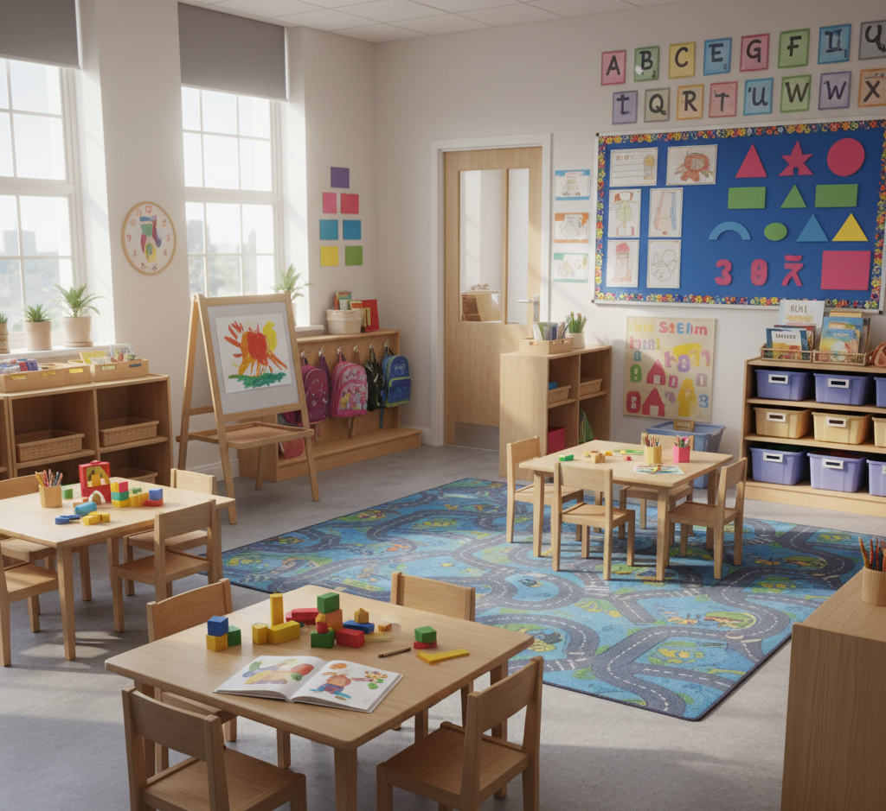

Our Educational Programmes
Comprehensive learning pathways for every stage
Early Years (Ages 1-4)
A nurturing environment where young children develop foundational skills through play-based learning and guided activities.
- Creche (Ages 1-2)
- Pre-Nursery (Age 3)
- Nursery (Age 4)


Primary Education (Ages 5-11)
A comprehensive curriculum that builds strong academic foundations while developing critical thinking and problem-solving skills.
- Lower Primary (Ages 5-8)
- Upper Primary (Ages 9-11)
- Special Enrichment Programs
Ready to join our school community?
Applications are now open for the upcoming academic year.
Apply Now